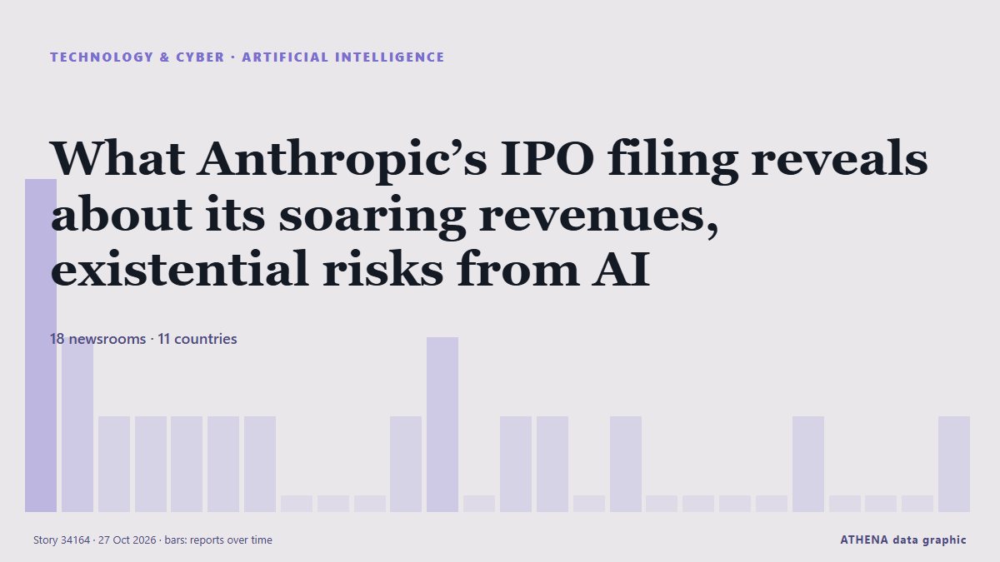

What Anthropic’s IPO filing reveals about its soaring revenues, existential risks from AI

The company behind Claude expects to begin trading on the Nasdaq Global Select Market under the symbol ANT, a filing Monday with the US Securities and Exchange Commission showed. από NDTV
Αναφέρθηκε ανεξάρτητα από 18 μέσα σε 11 χώρες από τις 26 Οκτ, πρώτο από το NDTV· η κάλυψη έχει πλέον ηρεμήσει. Το ATHENA εκτιμά τον κίνδυνο χαμηλό (1.6/10), κυρίως λόγω της σοβαρότητας της βλάβης που περιγράφεται και της γεωγραφικής και τομεακής εμβέλειάς του. Η βεβαιότητα είναι 88% (υψηλή), καθώς το επιβεβαιώνουν 18 ανεξάρτητα μέσα με μέση αξιοπιστία πηγών 74%. Ποιοι το ανέφεραν: 3 μέσα στη χώρα Ηνωμένες Πολιτείες · United States, 3 μέσα στη χώρα Ταϊβάν · Taiwan, 2 μέσα στη χώρα Ινδία · India. Η κάλυψη διήρκεσε από 26 Οκτ έως 27 Οκτ, 26 ώρες.
Γιατί έχει σημασία: Οι εξελίξεις στην τεχνολογία και την κυβερνοασφάλεια διαμορφώνουν την ασφάλεια, τον ανταγωνισμό και τους κανόνες της ψηφιακής ζωής.
Τι άλλαξε: 14 νέες αναφορές από 13 μέσα στο 24ωρο έως 27 Οκτ.
Οι τίτλοι των ειδήσεων παρουσιάζονται στα αγγλικά, όπως δημοσιεύτηκαν.
Με μια ματιά
Επιλέγεται, βαθμολογείται και γράφεται από τη δημοσιευμένη μεθοδολογία του ATHENA. Κανένας συντάκτης δεν παρεμβαίνει σε μεμονωμένα γεγονότα. Πώς παράγεται ›
| 26 Oct 15:09 UTC | 4 |
|---|---|
| 26 Oct 16:09 UTC | 2 |
| 26 Oct 17:09 UTC | 1 |
| 26 Oct 18:09 UTC | 1 |
| 26 Oct 19:09 UTC | 1 |
| 26 Oct 20:09 UTC | 1 |
| 26 Oct 21:09 UTC | 1 |
| 26 Oct 22:09 UTC | 0 |
| 26 Oct 23:09 UTC | 0 |
| 27 Oct 00:09 UTC | 0 |
| 27 Oct 01:09 UTC | 1 |
| 27 Oct 02:09 UTC | 2 |
| 27 Oct 03:09 UTC | 0 |
| 27 Oct 04:09 UTC | 1 |
| 27 Oct 05:09 UTC | 1 |
| 27 Oct 06:09 UTC | 0 |
| 27 Oct 07:09 UTC | 1 |
| 27 Oct 08:09 UTC | 0 |
| 27 Oct 09:09 UTC | 0 |
| 27 Oct 10:09 UTC | 0 |
| 27 Oct 11:09 UTC | 0 |
| 27 Oct 12:09 UTC | 1 |
| 27 Oct 13:09 UTC | 0 |
| 27 Oct 14:09 UTC | 0 |
| 27 Oct 15:09 UTC | 0 |
| 27 Oct 16:09 UTC | 1 |
| 26 Oct 15:35 UTC | 3.3 |
|---|---|
| 26 Oct 16:05 UTC | 1.4 |
| 27 Oct 16:40 UTC | 1.6 |
Γιατί αυτοί οι αριθμοί
Σημασία
Κίνδυνος
Βεβαιότητα
Η κάλυψη — ποιος το ανέφερε και πότε
ο τίτλος όπως δημοσιεύτηκε · ανοίγει το πρωτότυπο- NDTV · Ινδία · IndiaIn Anthropic's Historic IPO Filing, A Mention Of AI's "Existential Risks"
- The Korea Times · Νότια Κορέα · South KoreaAnthropic files for potentially biggest IPO ever despite CEO's AI risk warning
- Fast Company · Ηνωμένες Πολιτείες · United StatesAnthropic IPO: AI giant is preparing for blockbuster stock listing. Here’s what the SEC filing reveals
- Luxembourg Times · Λουξεμβούργο · LuxembourgAnthropic unveils IPO filing, showing soaring sales and AI risks
- The Independent · Ηνωμένο Βασίλειο · United KingdomOur AI could wipe out humanity, Anthropic says as it asks for billions of dollars to keep building it
- PBS NewsHour · Ηνωμένες Πολιτείες · United StatesAnthropic files for potentially the biggest IPO ever as CEO warns of AI's existential risk to humanity
- The National · Ηνωμένα Αραβικά Εμιράτα · United Arab EmiratesWall St looks for best day in month as Anthropic's IPO filing propels AI stocks
- Euronews English · Γαλλία · FranceAnthropic's IPO filing shows off soaring revenues as the company warns of AI's 'risks to humanity'
- Hespress English · Μαρόκο · MoroccoAnthropic unveils IPO filing, showing soaring sales and AI risks
- SecurityWeek · Ηνωμένες Πολιτείες · United StatesAnthropic Files for Potentially the Biggest IPO Ever as CEO Warns of Risk to Humanity From AI
- France 24 English · Γαλλία · FranceAnthropic's IPO filing shows soaring sales and steep losses
- DigiTimes Asia · Ταϊβάν · TaiwanAnthropic's IPO filing puts TSMC, HBM, direct leasing at the center of AI compute risk
- Korea Herald · Νότια Κορέα · South KoreaAnthropic points to AI dangers, soaring sales in IPO filing
- CNA (Channel NewsAsia) · Σιγκαπούρη · SingaporeAnthropic points to AI dangers, soaring sales in IPO filing
- Guardian Business · Ηνωμένο Βασίλειο · United KingdomFour takeaways from Anthropic’s potentially record-breaking stock market filing
- Business Recorder · Πακιστάν · PakistanJapan's Nikkei rises as Anthropic IPO filing lifts AI-shares
- DigiTimes Asia · Ταϊβάν · TaiwanAnthropic IPO filing shows the US govt is trying to be frontier AI's customer and gatekeeper
- Indian Express · Ινδία · IndiaWhat Anthropic’s IPO filing reveals about its soaring revenues, existential risks from AI
- Taipei Times · Ταϊβάν · TaiwanAnthropic points to AI dangers, soaring sales in IPO filing